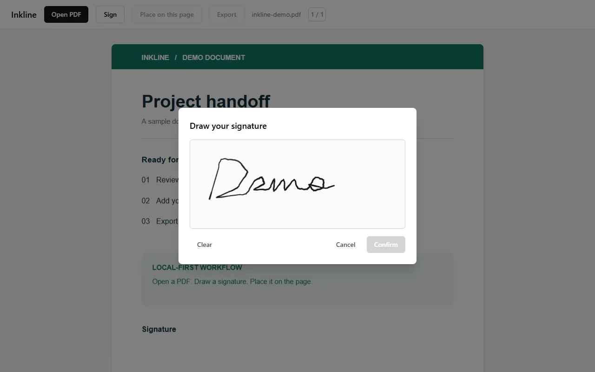

01 / BACKEND & MICROSERVICES↗
PATIENTFLOW / SERVICE MAPAPI Gateway JWT · request routing↓Patient serviceBilling service↓ gRPC / Kafka ↓Analytics event processing
Healthcare management services for patients, billing, analytics, and authentication, with gRPC communication, Kafka events, gateway routing, and container deployment configuration.
Engineering focus: service boundaries, JWT authentication, synchronous gRPC calls, asynchronous Kafka events, and integration tests.
JavaSpring BootgRPC / Kafka
02 / BACKEND APPLICATION↗
LIFE PREFERENCE / COUPON ORDERSCoupon request Redis shared-session login↓Lua validationRedis Stream↓Order worker Redisson lock · MySQL transaction
A Spring Boot merchant-review learning project based on the Heima Dianping course, with Redis shared-session login, merchant caching, coupon flash sales, and follow feeds.
Engineering focus: Lua purchase validation, asynchronous order processing with Redis Streams, and Redisson locks with MySQL transactions.
Spring BootRedisMySQL
03 / VERSION CONTROL2025
GITLET / SNAPSHOT STORAGEWorking directory add · remove↓Staging areaSHA-1 blobs↓Commit graph snapshots · parent links · branches
A Java version-control learning project based on CS61B: persistent file snapshots and commit objects, with staging, commits, history inspection, branch checkout, and merging.
Engineering focus: SHA-1 object IDs, file-to-snapshot mappings, commit-graph traversal, and directory-based push / fetch / pull. Source is not currently public.
JavaData structuresFile persistence
04 / LINUX SYSTEMS↗
PROCMON / PROCESS SAMPLING/proc snapshot PID · state · user · RSS↓CPU deltasMemory sort↓Terminal view live refresh · one-shot mode
A small top-like process monitor written in C. It reads Linux /proc, samples per-process CPU time, reports resident memory, and refreshes a sortable terminal view.
Engineering focus: procfs parsing, delta-based CPU calculation, POSIX process metadata, signal-safe shutdown, and a dependency-free Make build.
CLinux / procfsPOSIX
05 / FULL-STACK APPLICATION↗
AGENT SKILLS / APPLICATION FLOWCreate & edit Markdown skills↓AuthenticationPrisma / SQL↓Public gallery discover & share
A full-stack application for creating, editing, and sharing Markdown-based agent skills, with user authentication, a management dashboard, and a public gallery.
Engineering focus: Next.js routes, relational data modeling with Prisma, and authentication using bcrypt and httpOnly cookies.
Next.jsPrismaPostgreSQL
06 / SHIPPED WEB APPLICATIONLive website
● ● ●lorendw7.github.io/inkline↗

Signing workspace · Demo documentOpen live app ↗
A deployed browser-based PDF signing tool: open a document, draw and position a signature, then export the signed PDF. Processing stays on the device.
Engineering focus: PDF coordinate mapping, browser-only export, and a no-network CSP. Known limits: rotated and encrypted PDFs.
ReactTypeScriptPDF.js / pdf-lib
lorendw7.github.io/inkline · Opens in a new tab